Estudo de redesign · Site e design system
Onze
Redesign do site de uma consultoria de CRM parceira de Salesforce e monday.com, com guia de handoff para implementar no Framer.
- Papel
- Design de interface, design system e handoff
- Ferramentas
- Figma, Framer
- Entrega
- Home, soluções, cases, institucional e componentes em desktop, tablet e mobile
- Status
- Estudo próprio, ainda não publicado
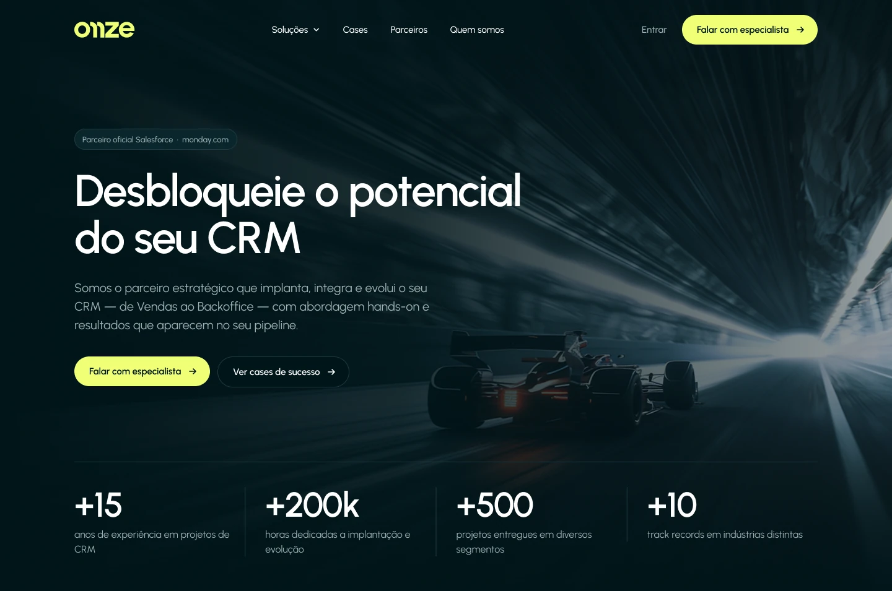
Contexto
A Onze é uma consultoria de CRM, parceira certificada de Salesforce e monday.com, que desenha, implanta e integra o CRM de vendas, atendimento, marketing e backoffice de outras empresas.
Este projeto é um estudo de redesign por iniciativa própria. Parti dos assets e do conteúdo que a Onze já tinha e redesenhei a estrutura, a interface e o sistema de componentes, com a intenção de apresentar o resultado ao cliente e oferecer o uso no site de produção, que já roda no Framer.
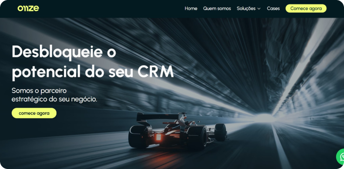
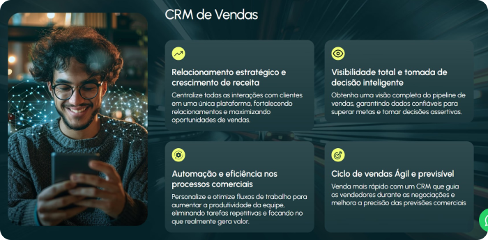
Uma home organizada pela oferta
As quatro frentes (Vendas, Atendimento, Marketing e Backoffice) viraram o centro da home, numa grade bento. Cada card responde à pergunta que o visitante tem: o que vocês resolvem para a minha área?
O card de Vendas ganhou um funil ilustrativo, com as etapas de prospecção a fechamento e a previsão do trimestre, para mostrar o tipo de resultado em vez de só descrevê-lo. O de Backoffice mostra as integrações (ERP, financeiro, projetos e APIs) em vez de um texto genérico sobre conectar sistemas.
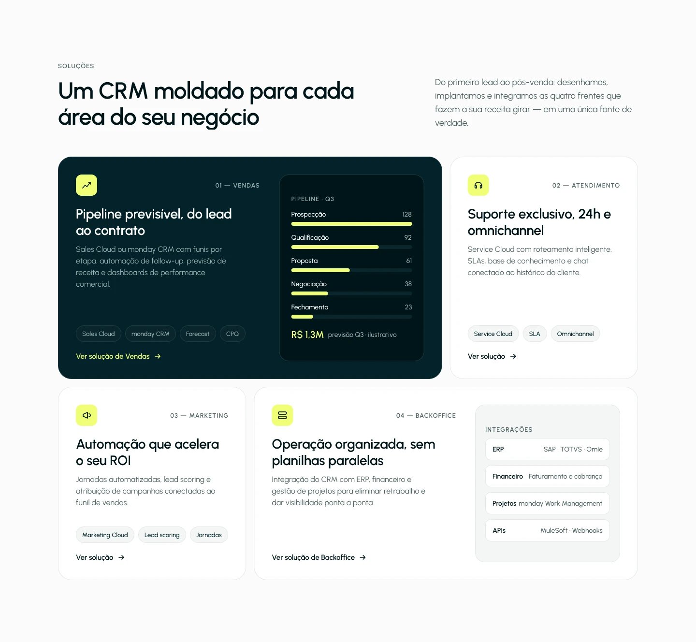
Método e prova social
A seção de método transforma a abordagem da Onze em quatro princípios numerados: abordagem hands-on, personalização no centro, tecnologia a serviço da empresa e um CRM moldado para o negócio. A leitura é rápida, e cada princípio tem uma frase de apoio.
A prova social vem em números: 98% de abertura de mensagens, +130 usuários impactados, +270 usuários impactados e visão 360° do cliente, cada um ligado a um case completo. O depoimento do cliente fica identificado como tal e preserva o nome por NDA.
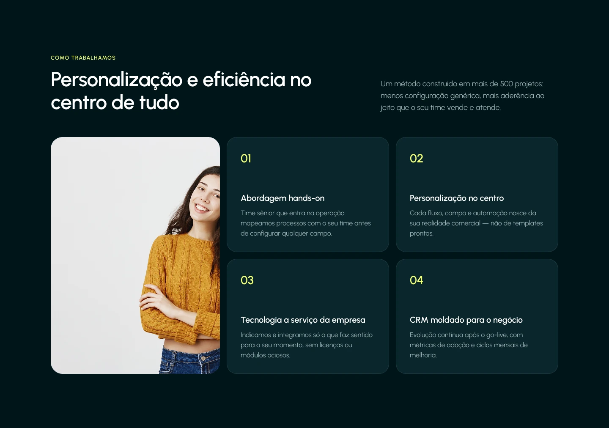
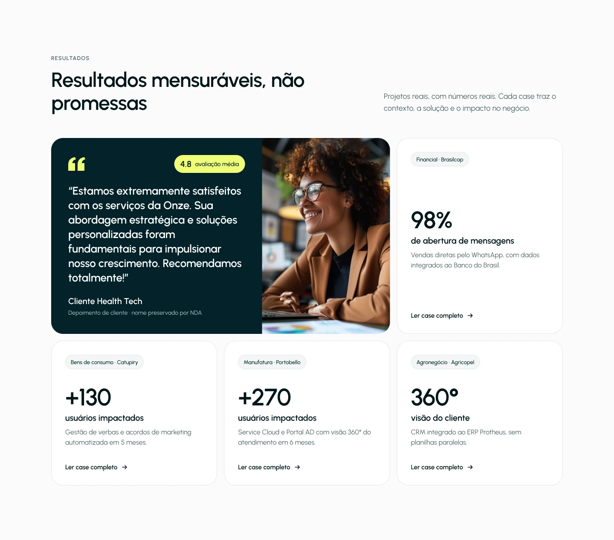
Páginas de solução
As quatro páginas de solução seguem o mesmo modelo, para que quem lê Vendas já saiba como ler Atendimento, Marketing e Backoffice: hero, benefícios, abordagem, processo em etapas, tecnologia com um case relacionado e uma chamada para o diagnóstico.
Ter um modelo único também facilita a manutenção: o conteúdo de cada solução entra nos mesmos blocos.
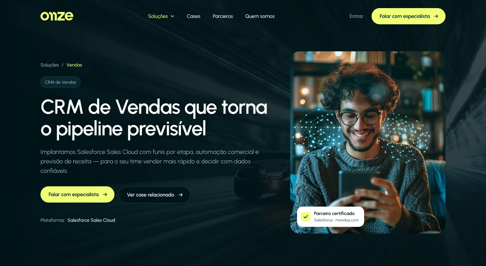
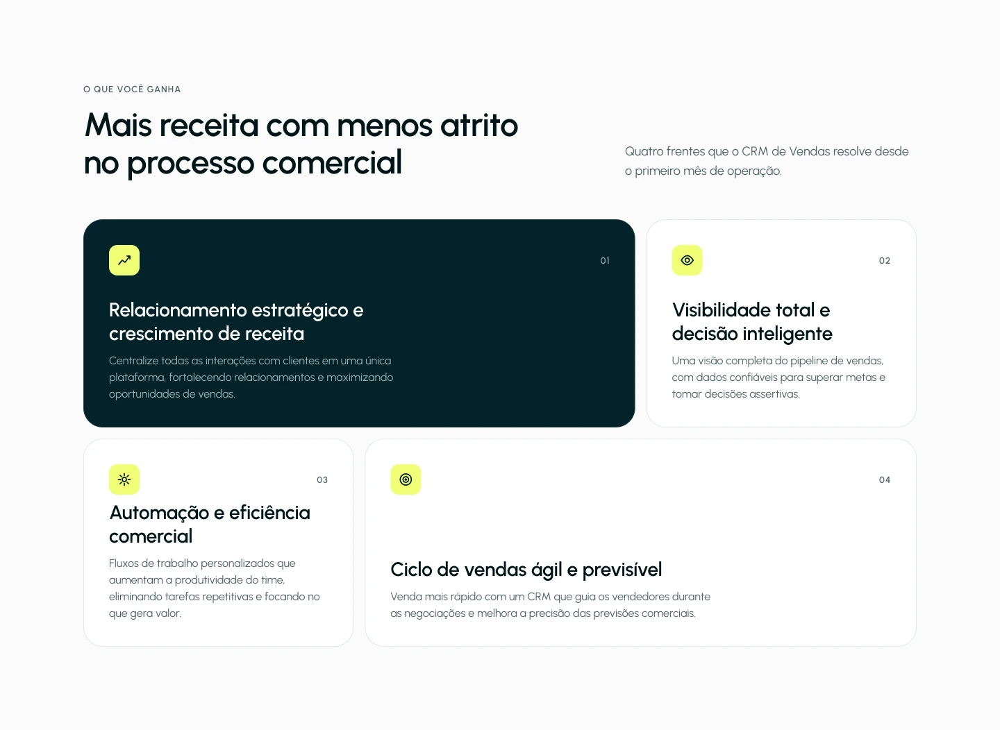
Cases com número em destaque
A página de cases abre com o título "Resultados reais de quem transformou o CRM com a Onze" e dois números de credibilidade: mais de 500 projetos entregues e 6 segmentos atendidos.
Cada case segue contexto e resultado, com um índice lateral "Neste case". O número principal ganha um bloco amarelo, a cor de acento da marca: 98% de taxa de abertura de mensagens no case da Brasilcap, com vendas feitas direto pelo WhatsApp. O resultado fecha com uma lista curta de pontos com check.
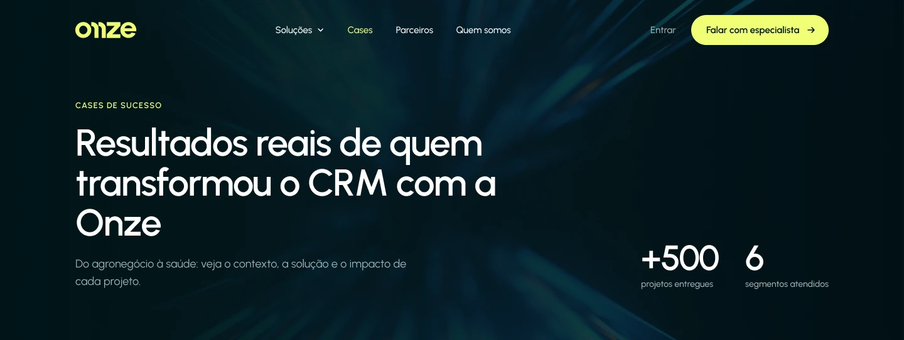
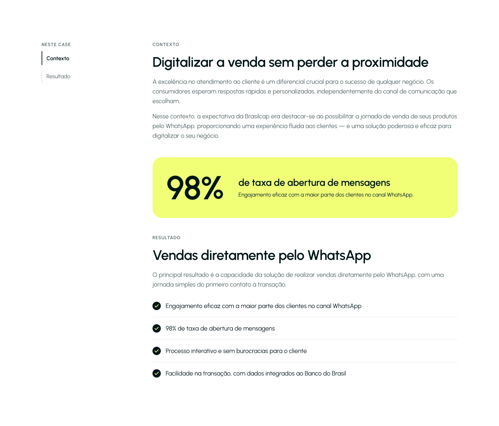
Desktop, tablet e mobile
Todas as páginas foram desenhadas em três tamanhos: 1440, 810 e 390 pixels. O layout se reorganiza em vez de encolher: a grade bento do desktop se mantém no tablet e vira uma lista de cards no mobile, e a navegação vira um menu.
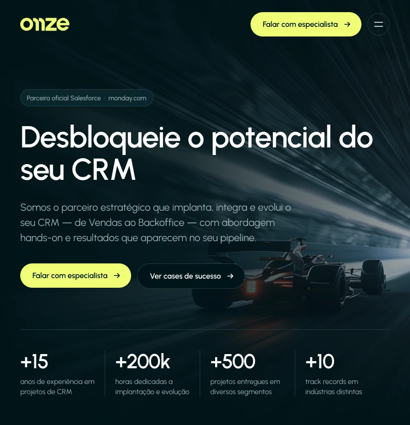
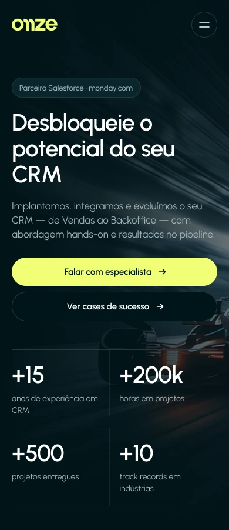
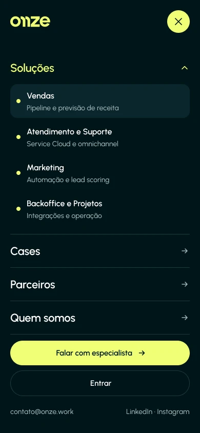
O estudo em números
Um sistema pequeno, desenhado para ser montado no Framer sem surpresas.
- páginas desenhadas
- 8
- tamanhos de tela
- 3
- componentes base
- 6
- telas no Figma
- 25
Design system
O sistema parte de seis componentes: Button, Tag, Choice Chip, Metric, Case Card e Input. Cada um tem variantes e estados: o botão em quatro estilos com hover e foco, o chip em padrão, selecionado, hover e foco, e o campo em padrão, foco, erro e desabilitado. As cores seguem os tokens documentados no guia de handoff, para que o Figma e o Framer falem a mesma língua.
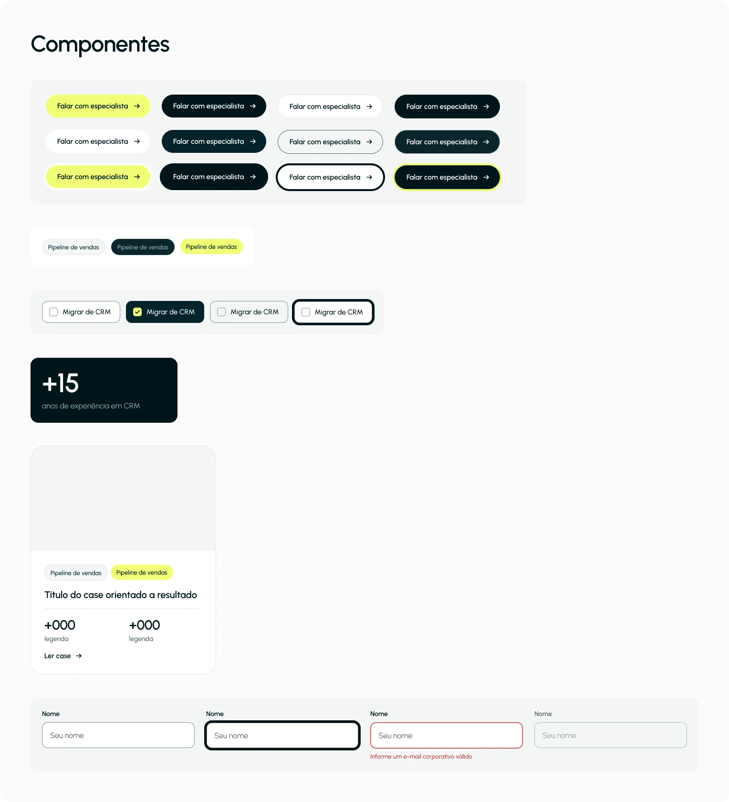
Handoff para o Framer
O redesign não termina nas telas. Junto com o Figma escrevi um guia de handoff para o Framer, com breakpoints e grade, tokens de cor, interações e movimento, componentes e CMS, e acessibilidade.
Os tokens de cor (Black Onze, Yellow Onze, Cream Onze e os demais) aparecem com valor e uso. A parte de acessibilidade mede o contraste de cada par contra as diretrizes WCAG 2.2 nível AA e deixa claro o que passa, o que foi corrigido e o que é só decorativo, para que quem implementa não precise adivinhar.
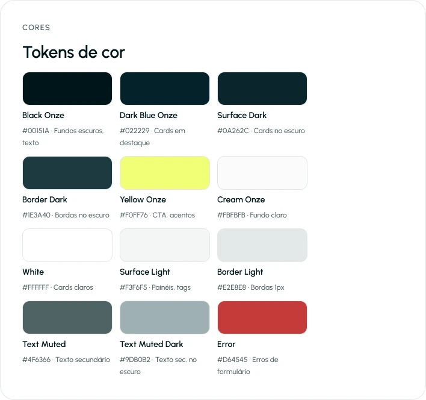
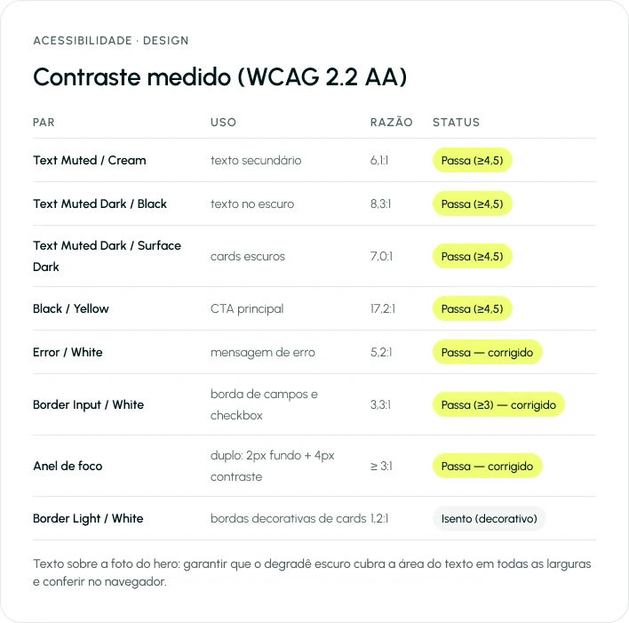
Próximo passo
Apresentar o redesign à Onze e, se fizer sentido para eles, implementar no Framer, onde o site de produção já vive. O guia de handoff foi escrito para que essa etapa seja rápida.
Contato
Gostou do que viu? Vamos conversar.